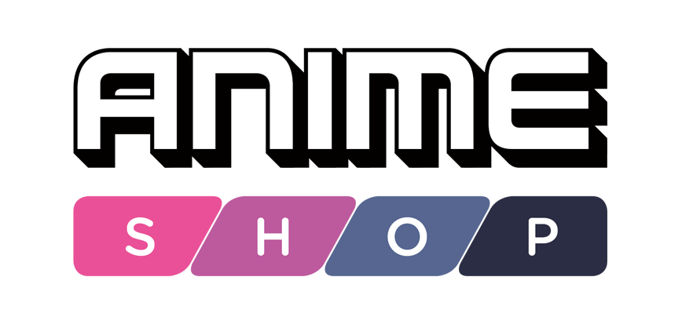
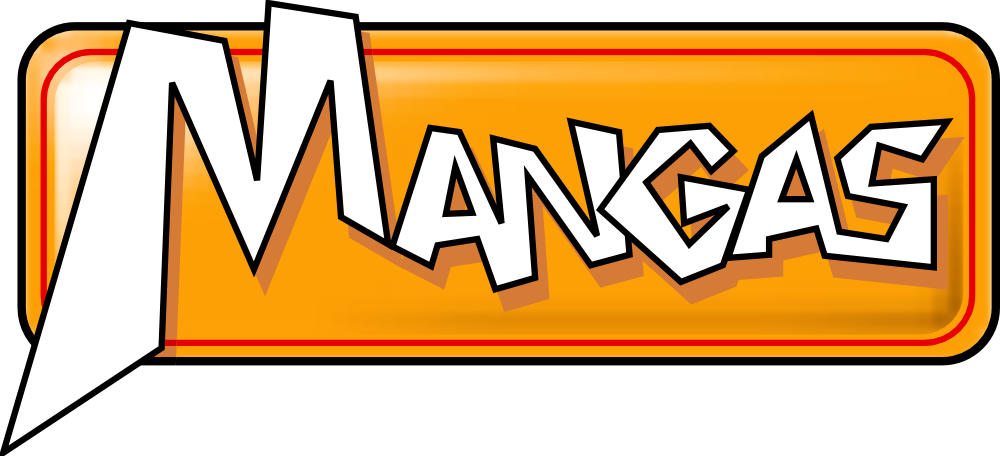

Tiendas De Venta



Inspirado por el trabajo de su madre como profesora de arte y de su padre como encargado de storyboards para comerciales, Kentaro Miura se dedicó a dibujar desde temprana edad.En la adolescencia, estudió en una preparatoria con un departamento de arte, donde conoció a su amigo más cercano y futuro mangaka, Koji Mori. Su amistad fue el foco principal para la compleja dinámica de Guts y Griffith, describiendo su relación competitiva: “él era tan genial que si yo no me alejaba, me hundiría; no me gustaba mis opciones, así que pelee de la única forma que sabía hacer, trabajando en el manga”.
"Berserk" es un manga japonés creado por Kentaro Miura, que se considera uno de los trabajos más influyentes y notables en el mundo del manga y el anime. La serie se inició en 1989 y lamentablemente el autor Kentaro Miura falleció en mayo de 2021, lo que dejó a la serie incompleta.
La serie aborda temas profundos como la ambición, la venganza, la traición y la lucha por la identidad en un contexto de violencia extrema. Además, el arte de Kentaro Miura es excepcional, con escenas de batalla detalladas y una representación gráfica de la oscuridad que es impresionante.
+666 (666) 666-066650
Millones de copias vendidas
Según la lista de los más vendidos de Amazon, los ocho volúmenes del manga Berserk Deluxe Edition se han convertido en los más vendidos de mayor rango. Los ocho volúmenes de Berserk ahora ocupan los ocho primeros puestos.
Además, el noveno volumen de Berserk Deluxe Edition también se ha asegurado la undécima posición de mayor venta a pesar de que se suponía que comenzaría a venderse a partir del 9 de noviembre de 2021.
2.324
HAPPY CLIENTS
Estas imágenes informativas pueden ayudar a los fanáticos y a los recién llegados a comprender mejor el mundo oscuro y complejo de Berserk, así como a apreciar su rica narrativa y personajes memorables.
El Guerrero Negro
Introducción a la vida de Guts. Estos
episodios lo
muestran en la época
posterior al Eclipse y la Edad de Oro, cuando se dedicaba a viajar solo, buscando y
ejecutando a las monstruosas criaturas conocidas como apóstoles.
La Edad de Oro
es un racconto que muestra la cruda niñez de Guts y su vida como mercenario, viajando y cambiando de ejército constantemente.
Condena
Se muestra por primera vez a los Caballeros de la Santa Cadena y su encuentro con el «lago rojo» que dejó el Eclipse. Tras la saga "El Guerrero Negro"
Halcón Milenario
Tras la Ceremonia de Encarnación,
Guts «acepta» a
Farnese de Vandi-
mion y a su acompañante Serpico
(quienes fueron la antigua
capitana de
los Caballeros de la Santa Cadena y su asistente, respectivamente)
y deciden viajar como grupo para encontrar Elfhelm
Fantasia
Narra los sucesos ocurridos tras la
"transformación del mundo", el establecimiento de
Falconia (el tan
ansiado reino de Griffith), la batalla contra
el Dios Marino y la llegada de Guts y su grupo a Elfhelm, la isla de los elfos.
Beherit
los beherits son extrañas piedras con
forma de huevos que tienen rasgos
faci-
ales humanos esparcidos de forma aleatoria en su superficie.
Su función es la de servir como llave entre el mundo terrenal y el plano astral.
Guts
El Guerrero Negro
Guts (ガッツ Gattsu), conocido por su epíteto del "espadachín negro" ("kuroi kenshi", "guerrero negro" en traducciones en español), es el protagonista del manga y anime Berserk. Es un antiguo mercenario marcado que viaja por el mundo en una lucha interna constante entre perseguir su venganza y proteger a sus seres queridos.
Ver MasAlgunos mangakas de fantasía oscura que han afirmado influenciarse por Berserk han sido:
¡Gracias por visitarnos! Estamos encantados de saber que quieres ponerte en contacto con nosotros. Tu opinión, preguntas y sugerencias son muy importantes para nosotros. Por favor, completa el siguiente formulario y te responderemos lo antes posible.